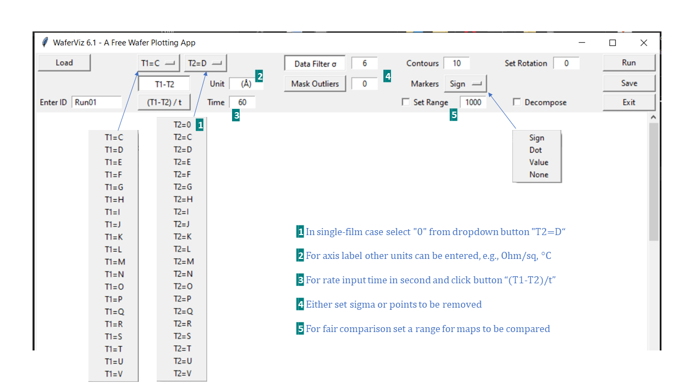

Wafer Visualization - WaferViz
About
WaferViz is a free wafer plotting software intended for semiconductor engineers.
As a process engineer the author found it is helpful having plotting program handy for converting raw data to presentable graphs since in fabs where plotting programs are often embedded in metrology tools and not readily accessible.
Key Features
- 3d maps with profile decomposition:

- 2d maps with rotation:
- Cross sections:

- Thickness as radius and theta increasing:
- Thickness distribution:
User Guide
- Download app:
Click "Download" in the left sidebar. Ignore some warnings imposed by Windows and you should have user interface of the app as following image. The app should be in "Downloads" directory of your PC.
- Prepare datasheet:
Make an excel workbook that contains raw data and associated coordination you want to plot. Paste coordination into columns "A" and "B". Paste film thickness into columns from "C" to "V" starting from row "2". Up to 20 films can be loaded once. You may want to add notes to row "1" and that wouldn't affect software plotting.
The data could be arranged as shown below.

- Load datasheet:
Click "Load" button in UI and select the workbook you have just prepared. Click "Open" and enter ID for this batch. Use alphabet numbers and underscores to avoid any errors.
- Plot graphs:
Use two dropdown buttons "T1=C" and "T2=D" in UI to select the two films of pre-process and post-process in databook you want to plot. "T1" and "T2" represent thickness (or other parameters like temperature, sheet resistance, etc.) of two films. In single-film case just select that film from dropdown button "T1=C" and select "0" from dropdown button "T2=D".
Click "Run" button in UI to plot. If "Decompose" box is checked the calculation is slowed down due to the nature of interpreted language of Python.
You may need to adjust pre-set configurations in UI for plotting.
- Save graphs:
Clicking "Run" button is only showing maps on screen for quick evaluation. Whenever the "Save" button in the UI is clicked, all graphs displayed in UI are automatically saved as an excel file stored in a self-generated folder named "Saved Graphs". The folder is under the same directory as WaferViz located. The saved file has self-generated name with id and time stamp.
Saved Excel sheet should be similar to below example.